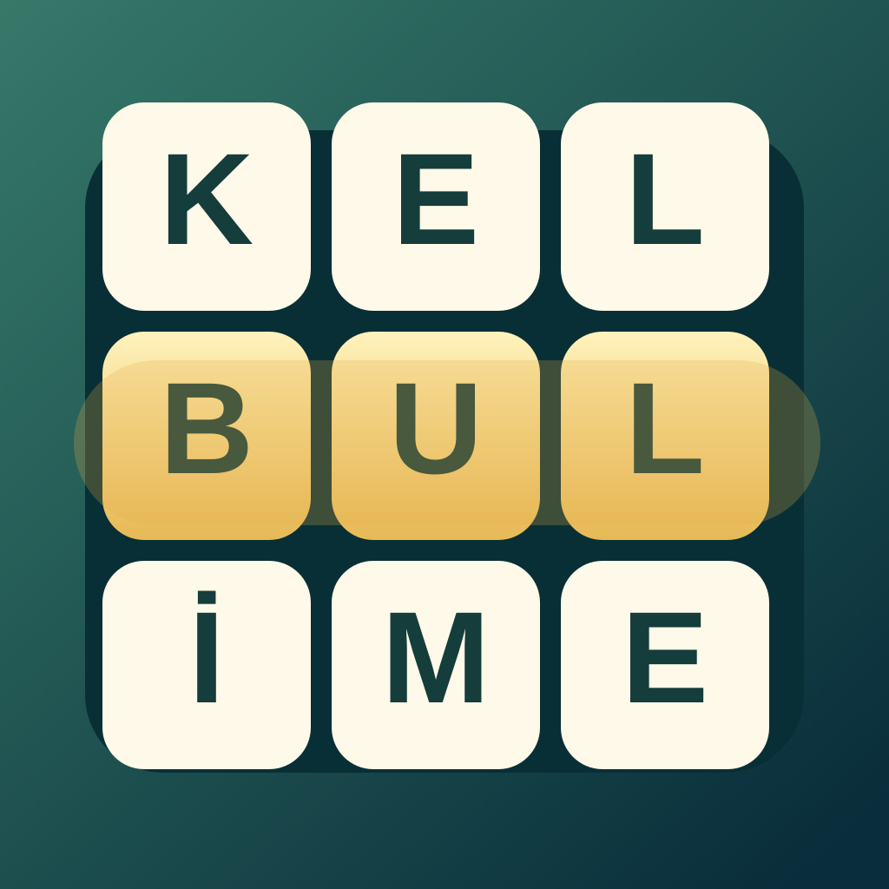
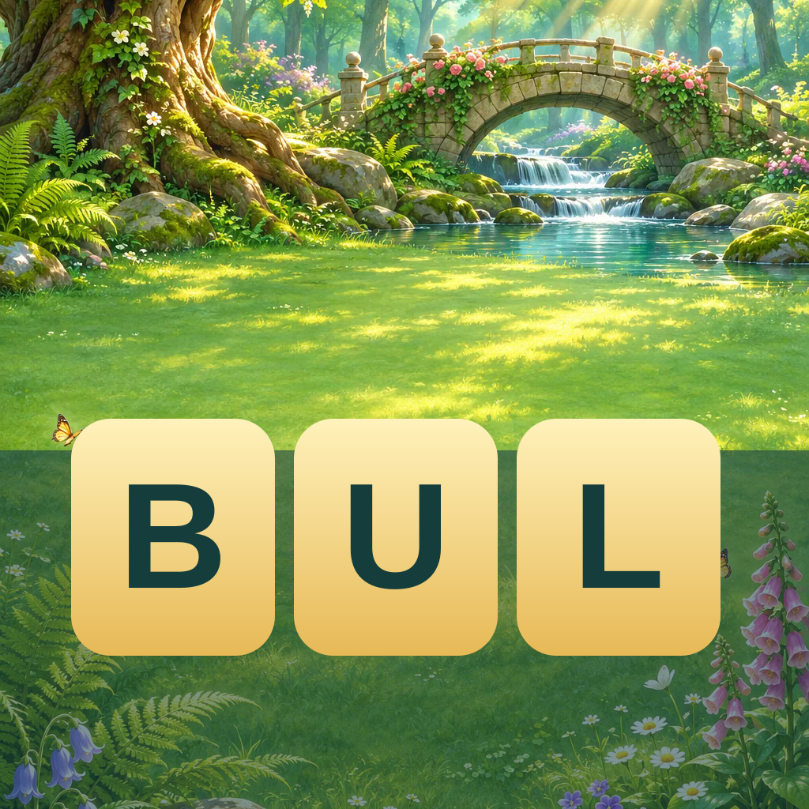
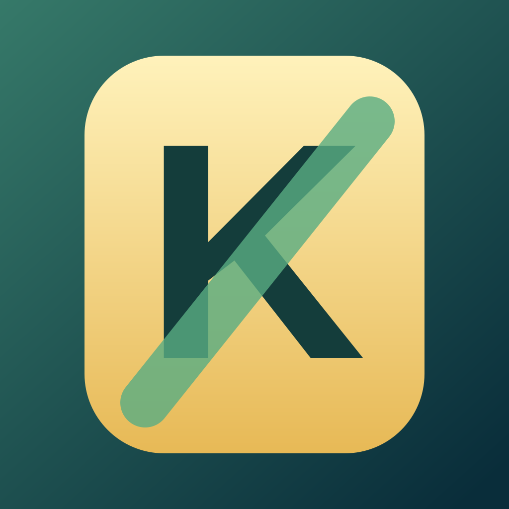

Seçim önizlemesi. Mevcut ikon değiştirilmedi. Özgün vektör tasarımlar; sahne oyunun kendi görseli.
A · Kelimeyi ilk bakışta anlat

1024 kaynak · 180 / 120 / 60 px çıktılar. Logo adı değişmez.
B · Yolculuk ve kelime

1024 kaynak · 180 / 120 / 60 px çıktılar. Logo adı değişmez.
C · Güçlü tek harf

1024 kaynak · 180 / 120 / 60 px çıktılar. Logo adı değişmez.